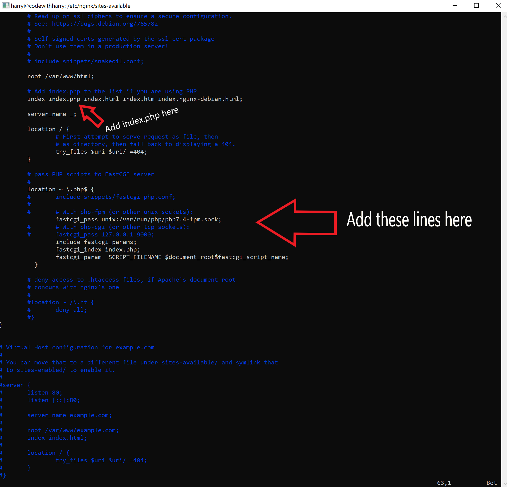

In this tutorial, we will install the LEMP stack on the ubuntu 20 based server. LEMP consists of Linux, Nginx(pronounced as Engine-x), MySQL for database, and PHP as a backend programming language. Together you can use this combination to host a set of high-performing sites on a single server. I will assume that you have finished the initial server setup as described here on your ubuntu server before installing the LEMP stack on Ubuntu 20.04.
If you are already using some other web server like apache2, it is recommended that you uninstall it or rebuild your server from scratch using the console provided by your hosting provider. DigitalOcean gives a convenient way to achieve this in its dashboard.
Let's install the LEMP stack now. Follow the steps below:
Update the server's package index by executing the command below:
sudo apt update
Install Nginx using the command below:
sudo apt install nginx
Allow Nginx through the firewall using the command below:
sudo ufw app list sudo ufw allow 'Nginx Full'
You can now go to your server's IP address to check if Nginx is installed successfully. You should see a page like this:
Let's install MySQL using the command below:
sudo apt install mysql-server
This command will install MySQL, and you will be able to see the console by entering "sudo mysql" in the terminal.
sudo mysql
The last component in the LEMP stack is PHP. Let's install it using the command below:
If you want to host a PHP website, you will have to copy your files to '/var/www/html' and modify the file located at '/etc/nginx/sites-available/default' to look something like this:
these are the additional lines added inside the "location ~ \.php$ {" block
include fastcgi_params; fastcgi_index index.php; fastcgi_param SCRIPT_FILENAME $document_root$fastcgi_script_name;
Here is a sample index.php site for you to try out:
<?php phpinfo(); ?>
Once you visit the IP of your droplet, you will see a page like this:
You will now be able to use PHP with Nginx. Happy coding!